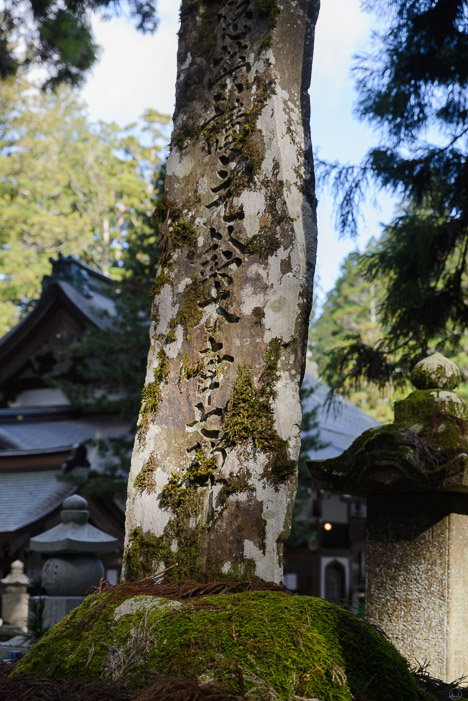

Südlich von Osaka liegt das Örtchen Koya-san in den Bergen. Weil die Seilbahn von einem Taifun beschädigt wurde, mussten wir die letzte Strecke einem Bus nehmen. Statt 5 Minuten hat das über eine Stunde gedauert und ging durch so viele Serpentinen, dass einem schwindelig wurde. Koya-san ist ein alter Kloster-Ort, dessen Hauptattraktion ein gigantischer Friedhof ist. Bei eisigen Temperaturen um die 0ºC sind wir zwischen den mächtigen, uralten Zedern umhergestreift, unter deren Schutz sich Abertausende von Gräbern quetschen.
Die meisten haben stelenartige Grabsteine, die über die Jahre (Jahrhunderte?) eine Menge Moos angesetzt haben. Es gibt aber auch neuere Gräber mit unkonventionelleren Steinen, wie z.B. einer meterhohen Rakete, oder ein Grab mit zwei Kaffeetassen aus Marmor – sehr inspirierend. Überhaupt gibt es hier einige Firmengräber, was wir von unseren Friedhöfen eher nicht kennen. Am Ende des kilometerlangen Hauptwegs kommt man zu einem Mausoleum, in dem der berühmte Mönch Kūkai seit dem 9 Jahrhundert schlummernd auf die Ankunft des kommenden Buddhas wartet.
Insbesondere nach Einbruch der Dunkelheit, ist der Friedhof besonders schön. Entlang der Wege stehen steinerne Laternen, die so aussehen wie unsere alten Taxi-Säulen, und tauchen die umliegenden Gräber in einen sanften Schimmer. Die dicken Baumstämme verschwinden in der Dunkelheit des Nachthimmels. Am Mausoleum haben wir zu unserer Entzückung noch einen singenden Mönch erwischt. Mit diesem Ausflug ist auch das Thema Reisesicherheit abgehakt: Japan ist offensichtlich ein Land, in dem man nachts über Friedhöfe spazieren kann.
Der Rest des Orts besteht aus Klöstern und Tempeln in jeder Größe. Nach einigen Tagen in Kyoto fiel es uns aber ernsthaft schwer noch viel Begeisterung für weitere Schreine und Steingärten aufzubringen. In vielen Klöstern kann man auch übernachten. Wir sind im Guesthouse Kokuu abgestiegen, um kurz vor Ende der Reise noch den Punkt "In einer Kapsel schlafen" abzuhaken. Das Haus besteht eigentlich nur aus einem großen Raum, dessen Inneres mit Pappwänden unterteilt wurde. Die Kapseln waren sehr bequem und gemütlich und hatten weniger Raumschiffatmosphäre als befürchtet – eher ein Schlafsaal mit erhöhter Privatsphäre.